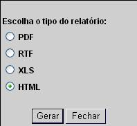

Gerar Relatório
Esta
opção do sistema permite que você gere
e emita um
relatório a partir de um conjunto de
informações
previamente selecionado.
Após clicar
sobre o botão  "Relatório",
o sistema apresenta a tela abaixo:
"Relatório",
o sistema apresenta a tela abaixo:

Se
desistir da emissão do relatório, clique no
botão "Fechar"
Mas,
se quizer gerar o relatório, o sistema permite que
você
escolha o formato, no qual, deseja ter o relatório.
- PDF --> É necessário que
você
possua o programa "AcrobatReader" instalado em sua máquina
para
poder visualizar o relatório
- RTF
--> Para visualizar o relatório, é
necessário que você tenha um
editor de texto instalado em sua máquina (word, open office,
...)
- XLS
--> Para visualizar o relatório, é
necessário que você tenha uma
planilha eletrônica instalada em sua máquina
(excel, open office, ...)
- HTML --> Para visualizar o relatório
utilizando o navegador (browser).
Após escolher o formato de saída, clique no
botão "Gerar".
Será apresentada uma tela solicitando que você
escolha se
deseja salvar, ou abrir o arquivo do relatório, ou, ainda,
cancelar a operação. Esta tela será
apresentada de
forma diferente, dependendo do sistema operacional. No caso do Windows
XP, será apresentada a tela abaixo:

Se optar por salvar o relatório, o sistema vai abrir uma
janela
solicitando que você informe o local que deseja armazenar o
arquivo gerado.
Mas, se optar por abrir o relatório, o sistema
irá ativar
o programa que está configurado, no sistema
oiperacional da
máquina, como responsável pela abertura de
arquivos para
o formato de relatório selecionado.
Ao clicar no botão "Cancelar", o sistema vai
fechar a tela e voltar para a tela anterior.